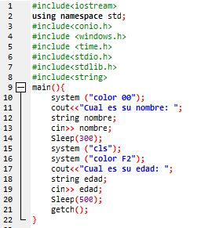

Me gusto mucho el tema porque aprendimos un nuevo lenguaje de programacion, que es c++ me parece divertido y a la ves no, me parece divertdo porque podemos jugar con los colores, hacer cosas nuevas que no se pueden hacer en los lenguajes anteriormente vistos, c++ es u lenguaje que funciana algo asi como una calculadora ya que si colocamos por ejemplo los datos personales de una persona en si por ejemplo, donde vive, su nombre completo, edad, cedula o targeta de identidad, porque no me parece casi divertido por los errores hay algunos que se resuelven facilmente pero otros que no. Tambien es algo muy esencial para la vida ya que esto se utilizara todo el tiempo porque ya todo es con tecnologia, programcion, etc.
volver